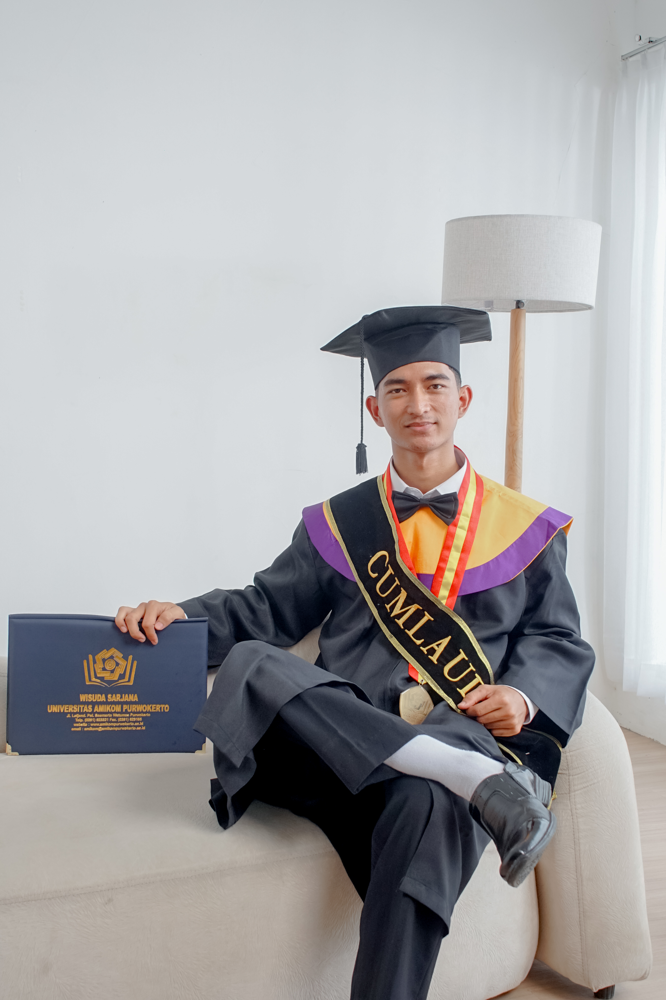
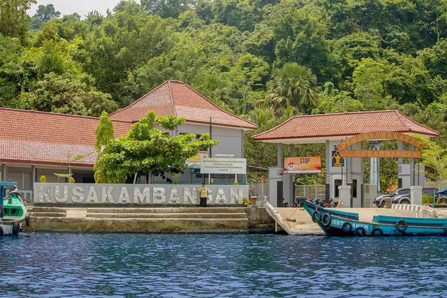
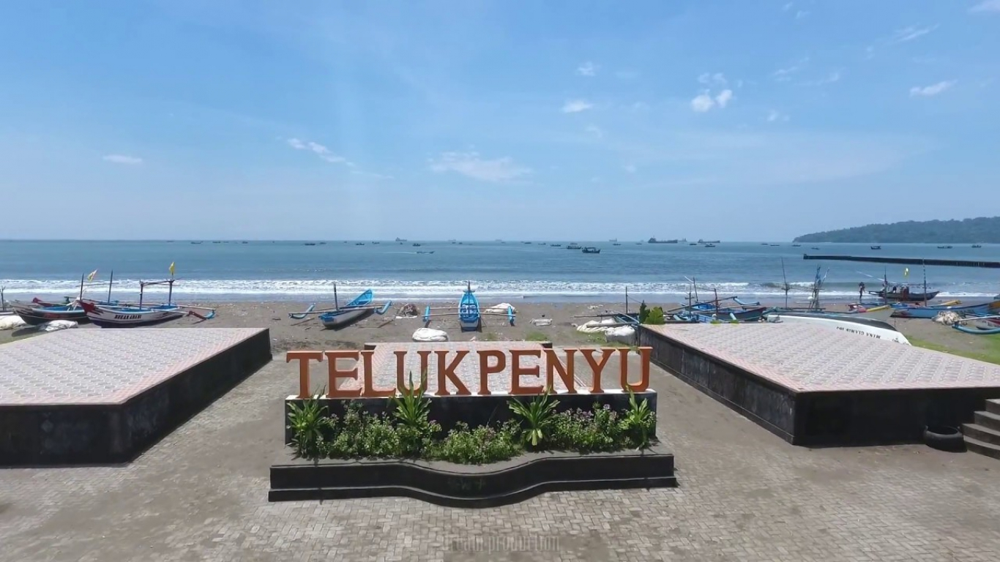
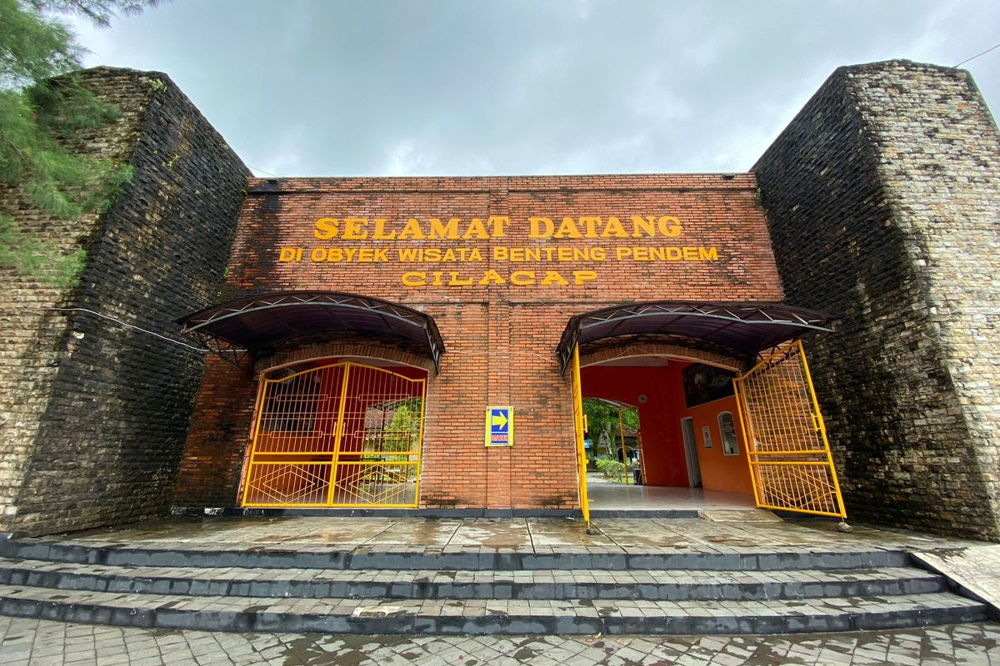
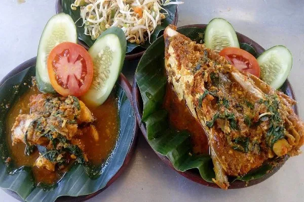

Profil Mahasiswa
Dokumentasi identitas, asal-usul keunikan daerah, dan visi strategis dalam program Pendidikan Profesi Guru.

Dwi Wahyu Nugroho,S.Kom
Mahasiswa PPG Prajabatan
Rekam Akademik
2021 – 2025
S1 Informatika, Universitas Amikom Purwokerto
2026 – Sekarang
PPG Prajabatan, Universitas Muhammadiyah Surakarta
Narasi Profil
Perkenalkan, nama saya Dwi Wahyu Nugroho. Saya lahir dan dibesarkan di Cilacap, sebuah kabupaten di pesisir selatan Jawa Tengah yang menyimpan keunikan alam serta sejarah yang kuat. Berbatasan langsung dengan riak ombak Samudra Hindia, daerah asal saya dikenal luas karena keberadaan pulau ikonik berlapis sejarah, yaitu Pulau Nusakambangan. Karakter geografis yang tegas and tangguh dari lingkungan pesisir ini secara tidak langsung menanamkan nilai kedisiplinan, ketahanan mental, serta semangat juang yang tinggi dalam diri saya untuk terus melangkah maju menjelajahi cakrawala keilmuan yang baru.
Perjalanan dinamika kehidupan di era modern mempertemukan saya dengan pesatnya arus perkembangan teknologi informasi. Saya terinspirasi oleh pemikiran bahwa penguasaan teknologi digital adalah kunci utama akselerasi kemajuan bangsa di masa depan. Berlandaskan motivasi tersebut, tujuan hidup saya mengkristal dengan mantap, yaitu mendedikasikan diri menjadi seorang Guru Profesional di bidang Informatika. Melalui bekal ilmu teknologi dan pengalaman berharga dalam program Pendidikan Profesi Guru (PPG) ini, saya berkomitmen penuh untuk menghadirkan iklim pembelajaran kreatif, interaktif, berbasis nilai karakter, serta berpihak sepenuhnya kepada kodrat perkembangan murid.
"Teknologi hanyalah sebuah alat. Namun dalam memotivasi anak-anak dan membuat mereka bekerja sama, gurulah yang paling utama."
— Bill GatesPesona & Keunikan Cilacap
Mengenal ragam warisan budaya, bentang alam, dan identitas historis pesisir selatan yang menginspirasi ketangguhan diri saya.

Pulau Nusakambangan
Pulau terluar legendaris penahan badai ombak Samudra Hindia yang kaya akan cagar alam, pantai tersembunyi, sekaligus benteng sejarah keamanan nasional.

Pantai Teluk Penyu
Ikon wisata pesisir Cilacap dengan panorama langsung menghadap pulau seberang, pusat berlabuhnya kapal nelayan tradisional, serta tradisi ritual sedekah laut tahunan.

Benteng Pendem
Kawasan peninggalan arsitektur militer Belanda abad ke-19 (*Kustbatterij op de Landtong te Tjilatjap*) yang terpendam di bawah tanah pesisir pantai.

Brekecek Pathak Jahan
Kuliner tradisional otentik Cilacap berbahan dasar kepala ikan Jahan yang dimasak kuah bumbu kuning pedas gurih kaya akan rempah Nusantara nusantara.